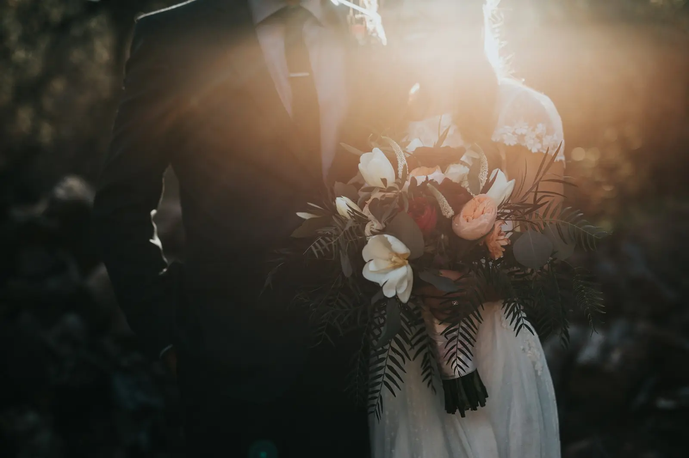

Listen & shape
Two meetings set the priorities: a loose twenty-minute group list, the people who mattered most, and the parts of the day the couple wanted left entirely alone. We walked the venue together and agreed where each of us would stand.
Commission · Wedding photography & film, Liverpool · June 2026

Wedding · Photography & Film · Liverpool
Amara and Josh married in Liverpool in June 2026. They wanted the day filmed and photographed in the same breath — no separate crews, no long list of posed groups — so we covered both, and spent the day close enough to catch the things that happened between the milestones.
01 / The brief
Amara and Josh were clear about two things. They did not want their guests waiting around for photographs, and they did not want a film that felt like a separate production bolted onto the day. Preparation was quiet and unhurried, the ceremony short and warm, and the evening built around a dance floor that had been promised to Josh's mother.
We planned around that rhythm rather than against it: one photographer and one filmmaker working as a pair, sharing positions so nobody was ever doubled up in front of the couple.
02 / How we worked
Photography and filming shared one plan. We took the formal group photographs in twenty minutes immediately after the ceremony while everyone was still together, then put the list away for the rest of the day and worked on instinct.
The film was shot handheld with the couple's own vows recorded on a separate audio track, so the words are theirs rather than a microphone pushed into their faces. Editing kept the day's actual pace: quiet mornings stay quiet.
03 / The day
Everything we needed was agreed in advance, which is what allowed the day itself to stay loose.
Two meetings set the priorities: a loose twenty-minute group list, the people who mattered most, and the parts of the day the couple wanted left entirely alone. We walked the venue together and agreed where each of us would stand.
Coverage ran from preparation through to the last dance. We kept portrait direction simple, protected time with guests, and filmed the speeches from the back of the room so nobody felt watched.
Photographs and film were edited together so they feel like one record. The couple received 612 edited photographs, a four-minute film, and a sneak peek within 48 hours of the wedding.
04 / The wedding film
The film was cut from the same coverage as the photographs, with the couple's vows recorded separately so the words are their own rather than a microphone in their faces. Press play to watch it here.
Amara & Josh, Liverpool — June 2026Wedding film
05 / From the day
The sequence begins in the quiet of the morning, opens into the ceremony, and slows again as the light drops. Working with available light kept the evening frames close to what the room actually felt like.


06 / The result
The film opens on the empty room before anyone arrived and closes on the dance floor at midnight. Amara's mother appears in it for eleven seconds without saying a word, which is the frame the couple asked to have printed.
Delivered in full within five weeks of the wedding. Amara and Josh have given us permission to talk about the day; their full gallery and film stay private to them.
Previous case study
A day worth remembering
Planning a wedding or special event?
Tell us about your date